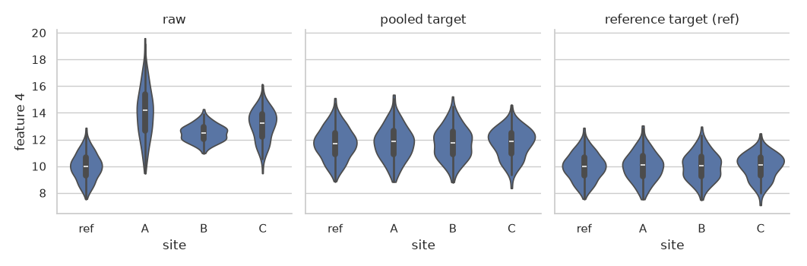
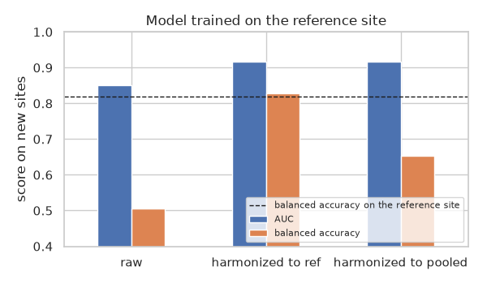

Note
Go to the end to download the full example code.
ComBat with a reference site#
By default ComBat harmonizes every site to the pooled mean and variance of
all sites: every site, including the largest or best-controlled one, is
changed. With ref_site every site is instead harmonized to the mean and
variance of a reference site, whose data are left unchanged (ref.batch
of R sva::ComBat). With several reference sites, every site is harmonized to
their pooled mean and variance.
Typical uses:
one site is the “gold standard” (a reference scanner, a protocol, a normative sample) and the others should look like it;
a model was trained on one site and must be applied to new sites without retraining: harmonizing the new sites to the training site keeps the data the model was trained on unchanged.
Terms used below:
site effect: for each feature, a shift of the mean (location, \(\gamma\)) and a change of the variance (scale, \(\delta\)) specific to a site.
target distribution: the mean and variance every site is mapped onto. Pooled: the grand mean of all sites and their pooled within-site variance. Reference: the same quantities computed on the reference site(s) only.
In formulas, for the reference sites \(R\) with \(n_R\) samples, the target mean is \(\hat\alpha = \sum_{i \in R} (n_i/n_R)\hat\beta_i\) (the site intercepts weighted by size) and the target variance is \(\hat\sigma^2 = \sum_{i \in R}\sum_j (y_{ij} - \hat y_{ij})^2 / (n_R - |R|)\). The covariate effects and the empirical Bayes priors are still estimated from all sites.
Imports#
import matplotlib.pyplot as plt
import numpy as np
import pandas as pd
import seaborn as sns
from sklearn.linear_model import LogisticRegression
from sklearn.metrics import balanced_accuracy_score, roc_auc_score
from sklearn.model_selection import train_test_split
from sklearn.pipeline import make_pipeline
from sklearn.preprocessing import StandardScaler
from uniharmony import verbosity
from uniharmony.combat import NeuroComBat
verbosity("error")
sns.set_theme(style="whitegrid")
Data#
Four sites measure 10 features. Site ref is large; sites A, B and
C shift and scale the features differently. A binary diagnosis adds a
signal to the first three features, with the same prevalence in every site,
so the site does not predict the diagnosis.
rng = np.random.default_rng(0)
site_names = np.array(["ref", "A", "B", "C"])
sizes = [300, 120, 150, 100]
location = {"ref": 0.0, "A": 3.0, "B": 2.0, "C": 2.5}
scale = {"ref": 1.0, "A": 1.8, "B": 0.6, "C": 1.3}
n_features = 10
sites = np.repeat(site_names, sizes)
y = rng.integers(0, 2, len(sites))
signal = np.zeros(n_features)
signal[:3] = 1.0
biology = rng.normal(size=(len(sites), n_features)) + y[:, None] * signal
site_location = np.array([location[s] for s in sites])[:, None] * rng.uniform(0.5, 1.5, n_features)
site_scale = np.array([scale[s] for s in sites])[:, None]
X = 10 + site_location + site_scale * biology
Pooled versus reference harmonization#
pooled = NeuroComBat().fit_transform(X, sites=sites)
to_ref = NeuroComBat(ref_site="ref").fit_transform(X, sites=sites)
plot_df = pd.concat(
[
pd.DataFrame({"feature 4": data[:, 3], "site": sites, "data": name})
for name, data in {"raw": X, "pooled target": pooled, "reference target (ref)": to_ref}.items()
]
)
grid = sns.catplot(data=plot_df, x="site", y="feature 4", col="data", kind="violin", height=3.5, cut=0)
grid.set_titles("{col_name}")
plt.show()

With the pooled target, every site moves, the reference site too. With the reference target, the reference site is untouched and the other sites take its mean and variance:
in_ref = sites == "ref"
print("Reference site unchanged (pooled): ", np.allclose(pooled[in_ref], X[in_ref]))
print("Reference site unchanged (ref_site): ", np.array_equal(to_ref[in_ref], X[in_ref]))
def site_summary(data: np.ndarray) -> pd.DataFrame:
"""Mean and standard deviation of every site, averaged over the features (no-signal features 4-10)."""
rows = {s: [data[sites == s, 3:].mean(), data[sites == s, 3:].std(ddof=1)] for s in site_names}
return pd.DataFrame(rows, index=["mean", "sd"]).round(2)
pd.concat({"raw": site_summary(X), "pooled": site_summary(pooled), "ref_site='ref'": site_summary(to_ref)})
Reference site unchanged (pooled): False
Reference site unchanged (ref_site): True
Without empirical Bayes the match is exact: every site gets exactly the mean and the variance of the reference site. Empirical Bayes shrinks the site effects of the other sites a little, so their means and variances are close to, not exactly, the reference ones.
exact = NeuroComBat(ref_site="ref", empirical_bayes=False).fit_transform(X, sites=sites)
for s in site_names:
assert np.allclose(exact[sites == s].mean(axis=0), X[in_ref].mean(axis=0))
assert np.allclose(exact[sites == s].var(axis=0, ddof=1), X[in_ref].var(axis=0, ddof=1))
print("Without empirical Bayes, every site has the mean and variance of the reference site.")
Without empirical Bayes, every site has the mean and variance of the reference site.
Several reference sites#
A list of sites defines the target as their pooled distribution: the grand mean of the reference samples and their pooled within-site variance. The reference sites are then harmonized as well (each one to the pool).
to_pool = NeuroComBat(ref_site=["ref", "A"], empirical_bayes=False).fit_transform(X, sites=sites)
in_pool = np.isin(sites, ["ref", "A"])
pool_mean = X[in_pool].mean(axis=0)
for s in site_names:
assert np.allclose(to_pool[sites == s].mean(axis=0), pool_mean)
pd.concat({"ref_site=['ref', 'A']": site_summary(to_pool)})
Applying a trained model to new sites#
A classifier was trained on the reference site only. New subjects come from sites A, B and C. Their site effects move them away from the training distribution, so the model loses accuracy.
ComBat is fitted (without labels) on the reference site and on a calibration
subset of each new site, then applied to the held-out subjects of the new
sites. With ref_site="ref" the reference data, and therefore the trained
model, stay valid. With the pooled target, the training distribution itself
moves, and the model would have to be retrained on harmonized data.
model = make_pipeline(StandardScaler(), LogisticRegression()).fit(X[in_ref], y[in_ref])
new = ~in_ref
calibration, test = train_test_split(np.flatnonzero(new), test_size=0.5, stratify=sites[new], random_state=0)
fit_rows = np.concatenate([np.flatnonzero(in_ref), calibration])
results = {"raw": X[test]}
for name, harmonizer in {
"harmonized to ref": NeuroComBat(ref_site="ref"),
"harmonized to pooled": NeuroComBat(),
}.items():
harmonizer.fit(X[fit_rows], sites=sites[fit_rows])
results[name] = harmonizer.transform(X[test], sites=sites[test])
def scores(data: np.ndarray, mask: np.ndarray) -> tuple[float, float]:
"""AUC (ranking) and balanced accuracy (decisions at the trained threshold) of the model."""
return (
float(roc_auc_score(y[test][mask], model.predict_proba(data[mask])[:, 1])),
float(balanced_accuracy_score(y[test][mask], model.predict(data[mask]))),
)
table = pd.DataFrame(
{
name: [*scores(data, sites[test] == "A"), *scores(data, np.ones(len(test), dtype=bool))]
for name, data in results.items()
},
index=pd.MultiIndex.from_product([["site A", "all new sites"], ["AUC", "balanced accuracy"]]),
)
in_ref_scores = (roc_auc_score(y[in_ref], model.predict_proba(X[in_ref])[:, 1]), balanced_accuracy_score(y[in_ref], model.predict(X[in_ref])))
print(f"Reference site (training data): AUC {in_ref_scores[0]:.3f}, balanced accuracy {in_ref_scores[1]:.3f}")
table.round(3)
Reference site (training data): AUC 0.909, balanced accuracy 0.819
AUC within one site only depends on the ranking of its subjects, which a location and scale change barely affects: it is similar in all columns.
Across the new sites (raw), the site effects put subjects of different sites on different scales, so the ranking mixes them: the AUC drops. Both harmonizations put all sites on a common scale and recover it.
Balanced accuracy uses the decision threshold learned on the reference site. Raw data, and data harmonized to the pooled target (whose mean and variance differ from the reference site’s, here because the new sites are shifted), are on the wrong side of that threshold for many subjects. Harmonizing to the reference site puts the new subjects on the scale the model was trained on, so its decisions transfer.
fig, ax = plt.subplots(figsize=(6, 3.5))
table.loc["all new sites"].T.plot.bar(ax=ax)
ax.axhline(in_ref_scores[1], color="k", linestyle="--", linewidth=1, label="balanced accuracy on the reference site")
ax.set(ylabel="score on new sites", ylim=(0.4, 1.0), title="Model trained on the reference site")
ax.tick_params(axis="x", rotation=0)
ax.legend(loc="lower right", fontsize=8)
plt.tight_layout()
plt.show()

Total running time of the script: (0 minutes 2.613 seconds)